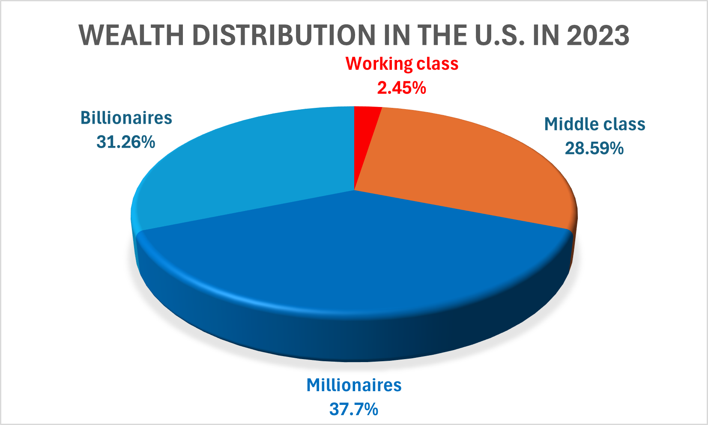

Please read the following information carefully and pay attention to the graph.
Wealth inequality in the U.S. is staggering. According to 2023 data from the Federal Reserve, the top 10% (e.g., millionaires, billionaires) of the American population owns 69% of the nation’s wealth, while the bottom 50% of the population (i.e., the working class) instead, owns only 2.45% of the nation’s wealth.
You can see how the wealth distribution in the U.S. looks like in the graph below.

To make a practical example, imagine that one Oreo cookie represents the median average American household wealth ($121.700). You will need 2,333,607 Oreo cookies laid side by side to get to the wealth of an American billionaire. You will need over three and a half times the width of the Grand Canyon to store all those cookies.